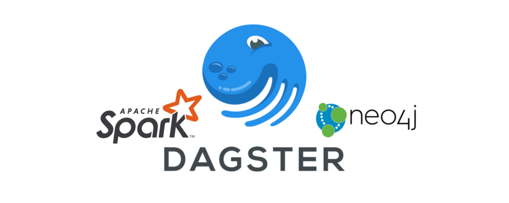
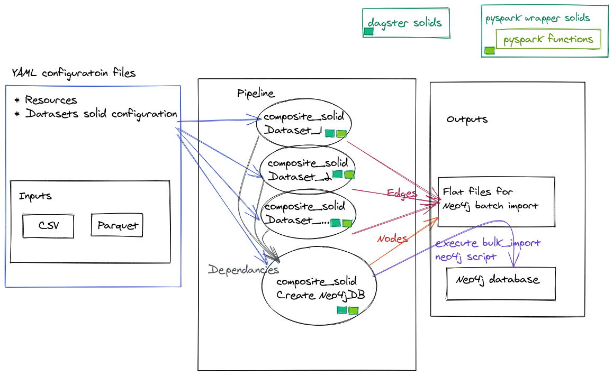
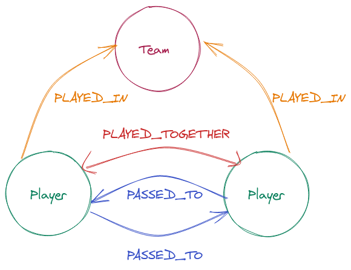
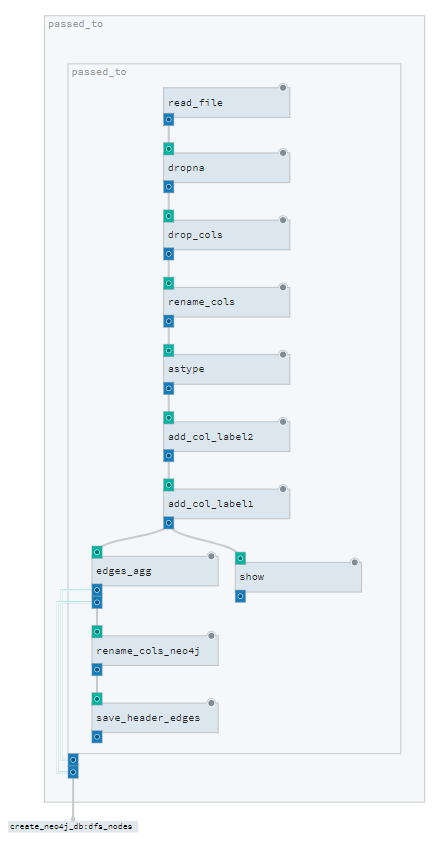
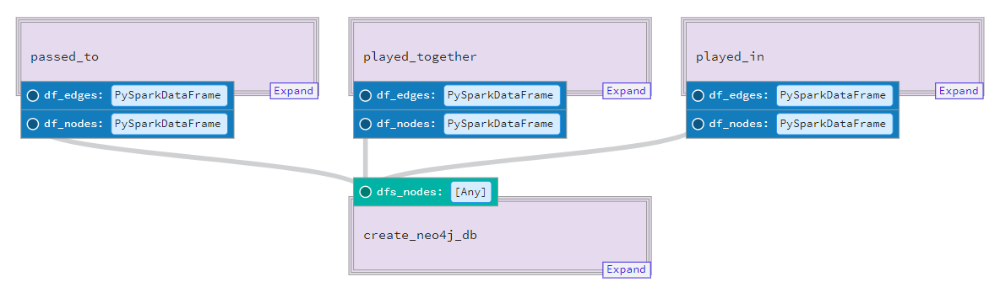
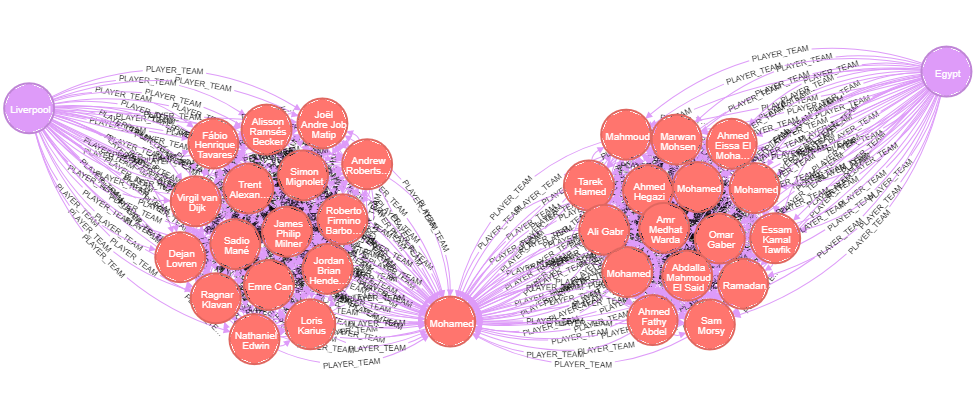

Implementing a graph network pipeline with Dagster
Posted on Thu 09 July 2020 in posts
Implementing a graph network pipeline with Dagster¶

Background¶
- Working in the Intelligence arena we try to 'connect the dots' to extract meaningful information from data.
- We analyze various datasets to link between them in a logical manner.
- This is useful in many different projects - so we needed to build a pipeline that can be both dynamic and robust, and be readily and easily utilized.
- In this blog post we share our experience in running one of our data pipelines with dagster - which uses a modern approach (compared to the traditional Airflow / Luigi task managers), see Dagster's website description
- We hope this blog post will help others to adopt such a data-pipeline and allow them to learn from our experiences.
Our Challenge¶
Connecting the dots¶
- Finding relationships between different entities can be challenging (especially across datasets) - but is vital when building a reliable intelligent report.
- A logical structure to store the entities and their relationships is in a Graph Database. In this example we are going to use Neo4j DB for storing the graph.
- Also we are going to use psedo BigData. However the pipeline that we are presenting generates billions of relationships.
- The outcome files of the pipeline will be in the format that will allow to use the dedicated Neo4j tool for bulk import. In the future we will do a separate blog post on our data analysis workflow with
Neo4j.
First take¶
- Our initial version for our pipeline was based on custom code and configurations (YAML) files.
- The code base is a combination of R and Python script that utilize Spark, Dask and HDFS.
- A shell script aggregated all the scripts to run the entire workflow
Inspect and Adapt¶
After our initial alpha version we noticed that we had some problems that required our attention:
- The pipeline was built horizontally (per process) and not vertically (per dataset) - leading to uncertainty and fragmented results
- We needed to refactor our code in order to stabilize and verify the quality of the product.
- Working with dask didn't solve all of our use-cases and so we needed to run some workloads on spark.
After checking several options we chose dagster as our pipeline framework for numerous reasons - including:
- Simplicity logic/framework
- Modern architecture with data as a "first class citizen".
- Open-source code base
- The framework includes a modern UI for monitoring and communicating the workflow status
- Pipeline supports data dependencies (and not function outputs)
- Ability to log/monitor metrics
It was fortunate that our configuration files allowed us to identify the various functions and abstract our business logic from the data transformation.
*** This is a dagster intermediate level blog post - for newbees it is recommended to run through the beginner tutorial on the dagster's site.
Understanding Dagster lego blocks¶
Before we start, here's a short introduction to Dagster's lego building blocks see dagster documentation:
- At the core we have
solids- these are the various "functional unit of computation that consumes and produces data assets". - The
solidscan be aggregated intocomposite solids. - A
solidcan have inputs and outputs that can be passed along the pipeline. - A
pipelineorchestrates the varioussolidsand the data flows.
Design implementation¶
The following diagram displays the architecture outline of the code:

YAML configurations
Dagsterhas many configuration files that assist in managing pipelines and there environments. In this example we will use only 2 configuration types:- resources - configuration file that manges the resources for the running pipeline
- solids - configuration file for the
composite solids. Each data source has its own configuration, in addition to the composite solid that implements the creation of the Neo4j DB.
Inputs
- Our premise is that the datasets inputs arrive in a timely manner (batch not streaming).
- Each dataset source has a corresponding configuration file.
Pipeline
- The
pipelineconsists of all thecomposite solidsthat organize the work that needs to be executed within eachsolid.
- The
Output Files
- In our example the outputs are:
- Nodes and Edges flat files in the format to be bulk imported into Neo4j
- Neo4j DB
- In our example the outputs are:
Let's build¶
Now we will build our basic units needed for our project:
Since we have several datasets we will can build each building block to be executed with a configuration file.
- Read file into dataframe (e.g.
cvsandparquet) - Message our data to fit the schema that we want for our graph network (including: adding/drop columns, rename_columns, concat columns etc.)
- Generate nodes and edges (per entity in the graph model)
- Save nodes and edges into csv files
Finally we will bulk import the csv files (nodes and edges) into Neo4j
Data¶
In order to demonstrate our workflow we will use data from  , a football analytics company that provides data from various leagues and competitions (for those American readers - we talking about the original football - soccer ) . The company has a free open data API tier that can be accessed using the instructions on their git hub page.
, a football analytics company that provides data from various leagues and competitions (for those American readers - we talking about the original football - soccer ) . The company has a free open data API tier that can be accessed using the instructions on their git hub page.
We would like to find the relationships between the players in 2 dimensions:
- Team companionship
- The number of passes between the players
We will be building a graph based on the following entity model:

The following script is available to download the data into 2 separate datasets:
- Player lineup as csv
- Player passes as parquet
Understanding the datasets¶
Player Lineup¶
This dataset has all the information regarding the players relationships with their teams. The key columns that we will use are:
player_id- identifies eachPlayerteam_id- identifies eachTeamteam_id&match_id- will create ourEdgeIDto identify when aPlayerPLAYED_TOGETHERwith anotherPlayer- The
PlayerPLAYED_INrelationship can be immediately derived from the table.
Player Event¶
This dataset has all the information regarding the players action within a match. The key columns that we will use are:
player_id- identifies eachPlayerpass_type- identifies the event in the match (we will select only thepassevent)pass_recipient- will identify the recipient of the pass
Additional properties will enrich the Nodes and Edges.
Let's play Lego¶
Let's see how we can use the dagster's blocks
Since we are working with BigData we will be working with spark (we also implemented some of workflow on Dask - but will keep this for a future post).
We will need to tell dagster what resources we are going to use. In dagster's environment everything is very module so we can define our resource with a YAML file see api resource documentation.
In our env_yaml folder we have the following env_yaml/resources.yaml file:
resources:
spark:
config:
spark_conf:
spark:
master: "local"Additional configuration for spark can be included under spark_conf. For our workload we added for example the following parameters:
spark.executor.memoryOverhead: "16G" spark.driver.memory: "8G"
Obviously for the example in this post there is no need to add any additional parameters.
Solid Intro¶
Lets review a simple solid such as a show function for a spark dataframe:
@solid(
config_schema={
"num_rows": Field(
Int, is_required=False, default_value=5, description=("Number of rows to display"),
),
}
)
def show(context, df: DataFrame):
num_rows = context.solid_config.get("num_rows")
context.log.info(f"df.show():\n{df._jdf.showString(num_rows, 20, False)}")The @solid() decorator above the function converts the function into a solid so dagster can utilize/ingest it.
The solid decorator can take several parameters. In this solid we are just using
- config_schema which consists of:
The config_schema assists in checking the validity of our pipeline.
def show(context, df: DataFrame):
Our function receives the context of the solid (supplementing the function with some additional inputs), in addition to a parameter that it will receive from the pipeline (which is a DataFrame).
num_rows = context.solid_config.get("num_rows")
When the function is executed we get the num_rows parameter
context.log.info(f"df.show():\n{df._jdf.showString(num_rows, 20, False)}")
Then we are using the internal dagster logging to print out the number of rows of the Dataframe.
Solid Cont.¶
Now lets delve deeper into a more complex solid such as read_file :
@solid(
output_defs=[OutputDefinition(dagster_type=DataFrame, name="df")],
required_resource_keys={"spark"},
config_schema={
"path": Field(
Any,
is_required=True,
description=(
"String or a list of string for file-system backed data sources."
),
),
"dtype": Field(
list,
is_required=False,
description='Dictionary with column types e.g. {"col_name": "string"}.',
),
"format": Field(
String,
default_value="csv",
is_required=False,
description='String for format of the data source. Default to "parquet".',
),
"options": Field(
Permissive(
fields={
"inferSchema": Field(Bool, is_required=False),
"sep": Field(String, is_required=False),
"header": Field(Bool, is_required=False),
"encoding": Field(String, is_required=False),
}
),
is_required=False,
),
},
)
def read_file(context) -> DataFrame:
path = context.solid_config["path"]
dtype = context.solid_config.get("dtype")
_format = context.solid_config.get("format")
options = context.solid_config.get("options", {})
context.log.debug(
f"read_file: path={path}, dtype={dtype}, _format={_format}, options={options}, "
)
spark = context.resources.spark.spark_session
if dtype:
df = (
spark.read.format(_format)
.options(**options)
.schema(transform.create_schema(dtype))
.load(path)
)
else:
df = spark.read.format(_format).options(**options).load(path)
yield Output(df, "df")Lets now break it down
solid decorator¶
In this solid decorator we have some additional parameters:
output_defs=[OutputDefinition(dagster_type=DataFrame, name="df")],
- output_defs defines a list of OutputDefinition of the
solid. In our case the output will be adataframethat will be consumed bysolids in the pipeline. Thenameof the object in the OutputDefinition can be consumed by othersolids.
required_resource_keys={"spark"}
- The resources that the solid requires in order to execute.
config_schema={
"path": Field(
...
"options": Field(
Permissive(
fields={
"inferSchema": Field(Bool, is_required=False),
"sep": Field(String, is_required=False),
"header": Field(Bool, is_required=False),
"encoding": Field(String, is_required=False),
}
),
is_required=False,
),- config_schema) - similar to the explanation above.
- In this
solidwe also have aPermissiveField type as a dictionary that will take various option parameters for reading in file.
- In this
solid in actions¶
Now let's look what the solid does.
def read_file(context) -> DataFrame:
Every solid has a context which is a collection of information provided by the system, such as the parameters provided within the config_schema. In this solid there is no additional parameter (compared to the above show solid since this is the starting point of the pipeline)
path = context.solid_config.get("path")
dtype = context.solid_config.get("dtype")
_format = context.solid_config.get("format")
options = context.solid_config.get("options", {})
In order to obtain the values from the context we can use the solid_config method
context.log.debug(f"read_file: path={path}, dtype={dtype}, _format={_format}, options={options}, ")
Dagster comes with a build in logger that tracks all the events in the pipeline. In addition you are able to add any logs that you require.
spark = context.resources.spark.spark_session
Normally we would get the spark_session from the importing pyspark.sql.SparkSession, however since we already configured our resources - we will get our session from the context.resources.
if dtype:
df = (
spark.read.format(_format)
.options(**options)
.schema(transform.create_schema(dtype))
.load(path)
)
else:
df = spark.read.format(_format).options(**options).load(path)Now that we have everything in place we can run the basic code to read in the data into spark.
yield Output(df, "df")
Finally the function yields an Output that can be consumed by the other solids in the pipeline.
Composite Solids¶
A single solid executes a
computation, however when wanting to create dependencies between solids we can use a composite_solid.
Here is a screen shot of the composite_solid from dagit

Lets review the player_pass composite_solid
@composite_solid(
output_defs=(
[
OutputDefinition(name="df_edges", dagster_type=DataFrame),
OutputDefinition(name="df_nodes", dagster_type=DataFrame),
]
),
)
def player_pass():
df_edges_disc = solids_transform.lit.alias("add_col_label1")(
solids_transform.lit.alias("add_col_label2")(
solids_transform.rename_cols(
solids_transform.drop_cols(
solids_transform.dropna(solids_fcutils.read_file())
)
)
)
)
df_edges, df_nodes = solids_edges.edges_agg(df_edges_disc)
solids_fcutils.save_header.alias("save_header_edges")(df_edges)
return df_edges, df_nodesThe @composite_solid is very similar to the @solid decorator.
Here we can see how the solids are nested within each other. Every
solidhas an input of aDataFrame(excpet for theread_filesolid). An every solid has anOutputDataFrame.- The
aliasallows to call the samesolidseveral time within a single composite_solid. - A solid can return several outputs (which need to be defined in the solid decorator under the
OutputDefinitionparameter )
Pipeline¶
Finally we can put everything together in our pipeline. A pipeline builds up a dependency graph between the solids/composite_solids.

@pipeline(mode_defs=[ModeDefinition(resource_defs={"spark": pyspark_resource})])
def statsbomb_pipeline():
player_pass_edges, player_pass_nodes = player_pass()
player_team_edges, player_team_nodes = player_team()
create_neo4j_db(dfs_nodes=[player_pass_nodes, player_team_nodes])In our pipeline, we have two composite_solids that output 2 Dataframe objects.
Our final create_neo4j_db composite_solid is dependent on the output of the prior 2 composite_solids and executes a solid to generate the node files, in addition to execute a neo4j-admin.bat script to bulk import that data into the database.
Into Neo4j¶
The results of the Pipeline can be imported into neo4j .
In order to import bigData in an optimal manner we will use the batch import admin tool. This allows for loading tens of millions of nodes and billions of relationships in the matter of hours.
Here is some data for Liverpool's striker Mohamed Salah:

Some Tips¶
Once we managed to grok our understanding of dagster and wrap our pyspark functions, our workflow was quite productive. Here are some tips to make your onboarding easier:
- When working with Spark:
- Run a cache when returning a
spark dataframefrom asolid. This will prevent running theDAGin complex pipeline that has various outputs. - Since we had various checkpoints where we needed to dump our datasets, we found that when our
sparkperformed unexpectedly, braking up the pipeline by reading back the output file (instead of passing on the dataframe object) allowed spark to manage its resources in an optimal manner. - Since our environment is on a CDH, the iteration of building a pipeline was enhanced when combining a
jupyter notebookthat would implement each step in thecomposite solid
- Run a cache when returning a
- Dagster:
- Remember to set DAGSTER_HOME once you are becoming serious
What else....¶
Dagster has several additional components that can upgrade the pipeline in a significant manner. These include, among others, Test framework, Materialization for persistent artifacts in the pipeline and a scheduler. Unfortunately thses topics are outside the scope of this post.
Summary¶
In this post we describe our workflow for generating a graph from separate data sources.
As our project matured, we needed to stabilize our workflow, thus migrating our ad-hoc script scaffolds into Dagsters framework. In this process we were able to improve the quality of our pipeline and enable new data sources to quickly be integrated in our product in a frectioness manner.
We hope that this post will inspire you to upgrade your workflow.